Part 8
8.BGM: Daijoubu!
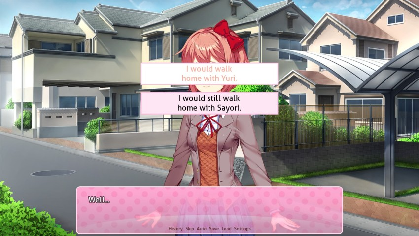
Annnnnd Sayori gets the shaft again.
 : Walking home with Yuri, huh..."
: Walking home with Yuri, huh..."Why does the thought of that make my heart pound...?
: I mean...given how hard it is for her to socialize, I would feel awful turning her down, so..." : "Isn't she so beautiful and smart?": That has nothing to do with what I just said!"
: "Isn't she so beautiful and smart?": That has nothing to do with what I just said!" : Jeez...there's not even any point in speculating something that's never going to happen."
: Jeez...there's not even any point in speculating something that's never going to happen."This is the biggest point of all. Do you honestly think YURI would be so bold as to request we walk home with her? She gets nervous putting her on her shoes.
: "Well, maybe...but I just like to think about it."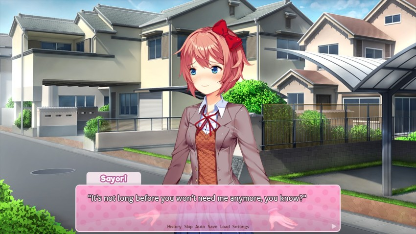
: Need you...? Sayori...I can't figure out how you're seeing things in your head right now.": "Sorry...": Everyone is different...nobody in the club is a replacement for you.": "Hmm...if you say so..."The conversation trails off, and I'm left feeling awkward. But it was kind of her fault for trapping me with such a weird question...I can't just lie to her. But if there's something that makes her happy, I would hate to take that away from her. That's why I said there's no point in speculating. But the festival is in just a few days...
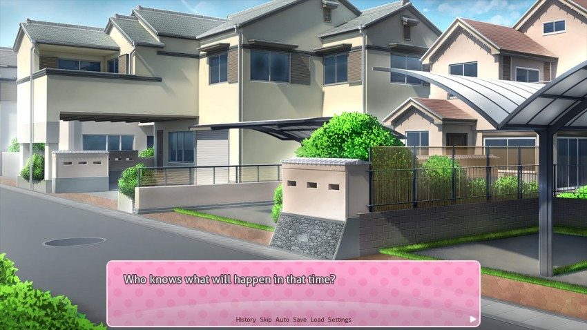
What indeed?

-----
BGM: Dreams Of Love and Literature
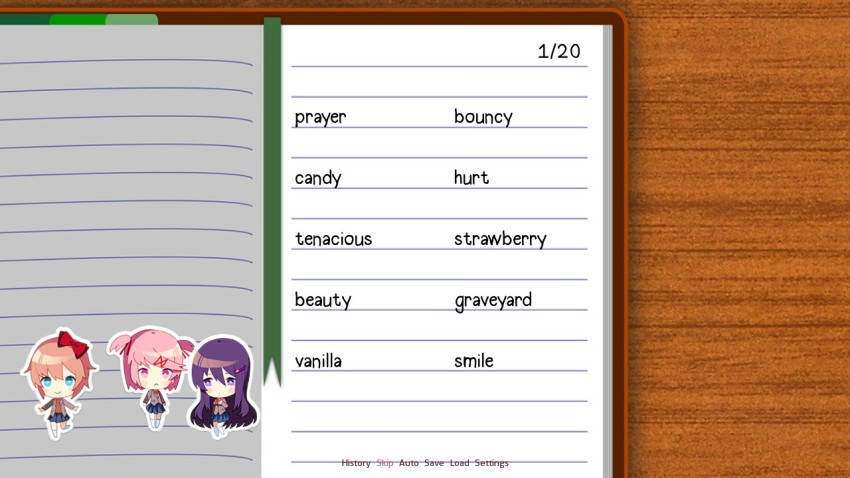
The words we went with were:
quote:
graveyard, melancholy, unrestrained, tragedy, fester, starscape, judgment, vivacious, eternity, whisper, vivid, dark, uncanny, vertigo, extraordinary, massacre, imagination, empty, secritive, extreme
I know theyre not all from group C; I have to sort through 200 words and I am absolutely not going to filter down the list to check every single word, so some of them were accidentally from other lists. It doesnt matter in the long run majority rules.
-----
BGM: Ohayou Sayori!

 : "I'm the last one here again!": Don't worry, I just walked in too."
: "I'm the last one here again!": Don't worry, I just walked in too.": "Were you practicing piano again?"
: "Yeah...ahaha...": "You must have a lot of determination. Starting this club, and now picking up piano..."
: "Well, maybe not determination...but I guess passion. Remember that the club wouldn't be here if it wasn't for all of you."Literally!
: "And I'm super happy that you're all willing to help out for the festival, too!"We were sort of strong-armed into it.
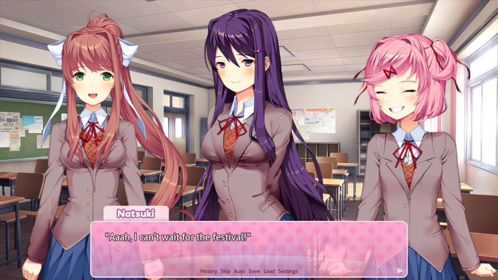
 : "It's gonna be great!": "Eh? Weren't you complaining about it just yesterday, Natsuki?": "Well, yeah. I'm not talking about our part of the festival."
: "It's gonna be great!": "Eh? Weren't you complaining about it just yesterday, Natsuki?": "Well, yeah. I'm not talking about our part of the festival."Yeah, our part's gonna blow.
: "But it's a whole day of school where we get to play and eat all kinds of delicious food!": You sound a bit like Sayori all of a sudden...": "Monika! Do they usually have fried squid?": "Squid...? That's a pretty specific thing to look forward to...": "Oh, come on. Are you saying you don't like squid? You, of all people?": "Eh? I didn't say I don't like it. Besides, what do you mean by 'you of all people'?": "Because! It's right in your name!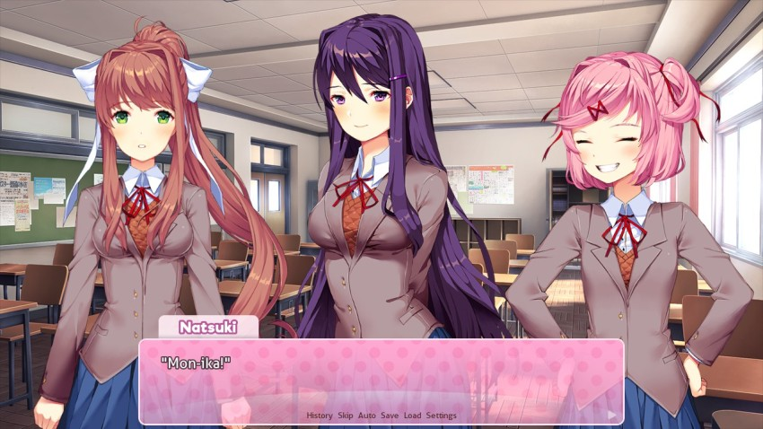
: "Eh?! That's not how you say my name at all! Also, that joke makes no sense in translation!": "...?": "Ah...never mind!""Ika" means squid in Japanese.
 : "Let's just focus on our own event for now, okay?": "Ehehe. Fine, fine. Your reactions aren't as fun as Yuri's or Sayori's, anyway."
: "Let's just focus on our own event for now, okay?": "Ehehe. Fine, fine. Your reactions aren't as fun as Yuri's or Sayori's, anyway.": "Excuse me..."
: Where is Sayori, anyway...? Oh, there you are."Sayori is sitting at a desk in the corner of the room, looking down at nothing. I walk over to her.
: Hey, Sayori."I wave my hand in front of her face.
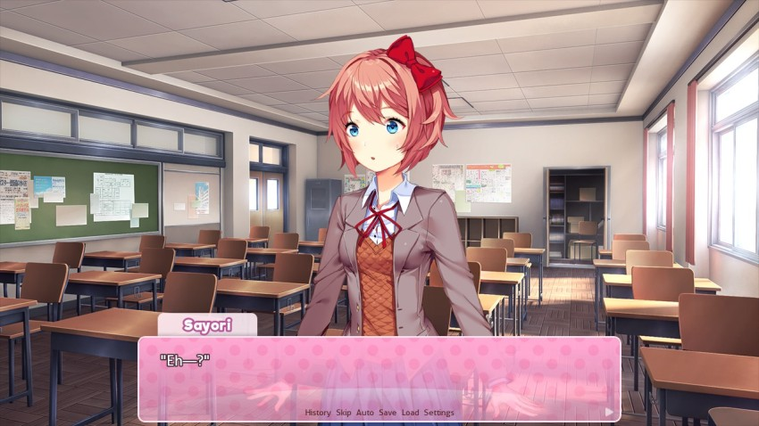
: You're spacing out again.": "A-Ah...ehehe, sorry...don't mind me. You can go talk to everyone else.": Huh...is everything alright?": "O-Of course! Why wouldn't it be?"Because you're sitting there being catatonic.
: It just feels like you're a little off...sorry for assuming things.": "Jeez, you worry too much about me.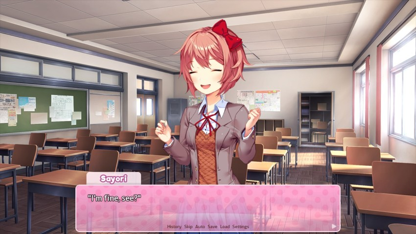
Sayori shows me a big smile.
Well, I'M convinced.
: "Don't let me distract you from having fun with everyone.": Well...alright. If you say so."I worriedly glance at Sayori before turning back toward everyone else. But the conversation has already dispersed, with everyone back at their usual activities. Maybe I should ask Monika if she's noticed anything about Sayori recently...since they've been preparing for the festival, they must be spending a lot of time together. I timidly approach Monika, who is shuffling through some papers at her desk.
Papers? What papers? Has she been grading these poems or something?
: "Mitayo! What's up?": Hey, this might sound a little strange, but...have you noticed anything up with Sayori recently?"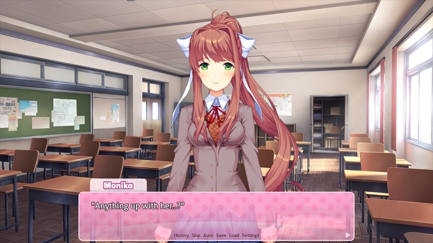
: " In what way do you mean?": Maybe I'm reading into it a little too much, but she seems a bit downcast today...": "Oh? You think so? I can't say I've noticed anything about her..."Monika peers across the room at Sayori, who is idly dragging a rubber eraser up and down her desk.
That, uh, is not like her at all.
: "Maybe there is something on her mind...but I'm surprised I'm not the one asking you, Mitayo. You certainly know her a lot better than I do.": Yeah, but she's never really like this...she's always talked to me about things that bothered her. But this time, when I asked her, she was really dismissive. Sorry, I know it's not your problem! I just wanted to ask if you knew anything, so I'll drop it now...": "No, no...it's important to me, too. I mean, I'm also friends with her...and I also care about the well-being of my club members, you know? Maybe I'll try talking to her myself...": Eh? Are you sure about that...? She seemed like she wanted to be left alone...": "Are you sure? Maybe she just has a hard time bringing it up with the person of interest...": Person of interest...? What do you mean by that?"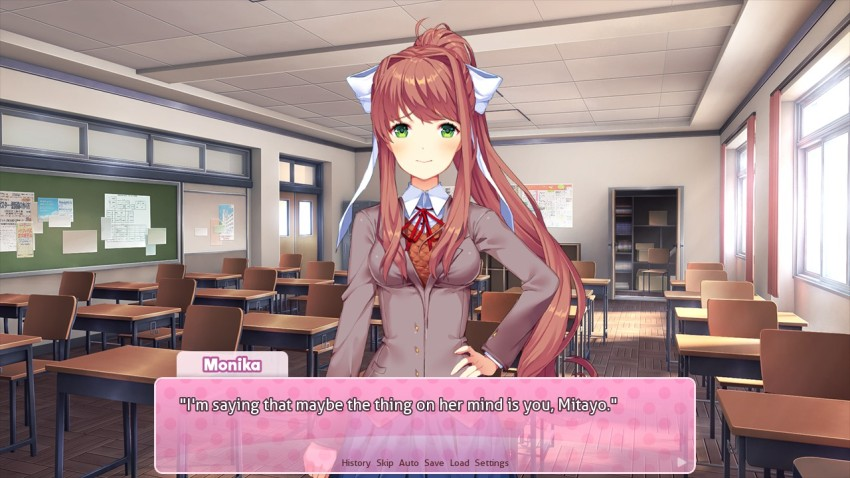
I admire that Monika just comes out and says what Sayori made perfectly clear with that 'walking home' question.
: Me...? How on Earth would you come to that conclusion?": "Well...I probably shouldn't say too much, but...Sayori talks about you more than anything else, you know?": Eh...?": "She's been so much happier ever since you've joined the club. It's like an extra light was turned on inside of her.": What? No way...Sayori...is always like that. She's always been full of sunshine. It's not any different now than it always has been.": "Ehehe. You're so funny, Mitayo. Have you thought that maybe you've always seen her as so cheerful...because that's just how she is when she's around you?": ..."This is much more obvious when following Sayori's path, but we've still seen plenty of hints throughout our run as well.
: "Ah...I said too much. I'm sorry...what do I know, anyway? I didn't mean to jump to conclusions, so you should just forget about what I said. I'll try to talk to her, so try not to think about it for now.": Ah...alright..."Monika smiles meaningfully. I know she said to forget about it...but I already know that I won't be able to get her words out of my head. Monika stands up from her desk and walks across the room to where Sayori is sitting. I watch her kneel down next to Sayori and gently talk to her. But she's keeping her voice so quiet that I can't hear her from here.
I sigh and sit myself down. I know Sayori told me not to worry about her, and to have fun with everyone else...but that's impossible to do when she's behaving like this. Exactly how much do I care about her, that I'm letting this weigh me down so much? Now it feels like I'm the one behaving out of the ordinary...but there's nothing I can do besides wait for Monika.
-----
Why does it feel like I'm being watched...? I glance around the room. Suddenly, I notice Yuri peering at me from over her book. But she looks away just as quickly with a flustered look on her face. I realize that she won't get anywhere like this. I've never really seen Yuri approach anyone or start a conversation on her own accord. So, I have no choice but to approach her myself. By now, it's a little easier for me to do that. I stand up from my desk and sit in one next to her own.
Our relationship is never going to leave the awkward stage at this rate.
BGM: Music fades out.
: "..."
: "I...didn't mean to bother you or anything..."
BGM: Play With Me!
: Relax, you didn't even do anything.": "But...
: Alone with my thoughts...? How were you even able to tell that I was thinking like that?": "Well...it's something that I do a lot...so it wasn't hard for me to spot based on your posture and expression. N-Not that I was staring or anything...! I didn't do anything creepy like that...!"
There's nothing wrong with looking at the guy you're interested in. Mentioning that you're 'not creepy' makes it creepy, though.
: In any case, I guess you were right. I'm sorry if I caused you any concern.": "Don't apologize...your troubles are only the concern of those who willingly share in that concern. Of course, there are certainly those who find the most comfort in keeping to themselves...but if you would prefer to share what's on your mind, then I would be glad to listen."
: Ah, it's really not that big of a deal...I was just feeling a bit uneasy about Sayori.": Yeah...she seems a little off today, but when I asked her about it, she didn't want to admit it to me. So I can't help but wonder if something happened to her.": "Oh? That's quite romantic..."
You're all projecting really hard on my relationship with Sayori, which is especially weird coming from you, Yuri.
: Eh...?": "S-Sorry! I didn't mean to say something stupid...!"
: It's not that, I just didn't want you to misunderstand. Sayori and I have just been friends for a long time, that's all.": "Ah...I see...then perhaps it is unusual for her to be dismissive to you about her feelings..."
: Or maybe I'm just reading into it a little too much...": "Mitayo...the world is full of meaning, often hidden deep beneath plain sight. And there are many untold mysteries behind every person, no matter how well you may know them."
tl;dr - people are deep.
: Ah...so you think that there might be something behind it after all?": I think that Sayori is a very complex person. Her mannerisms on the outside don't always match what may be going on inside her head...and she may not always know what she wants. I noticed her strange behavior today, too...and I also feel some concern for her. But in your case, it looked like she was fully occupying your thoughts, wasn't she?"
: Well...I guess that was the case.": "Sayori...she really means a lot to you, doesn't she?"
I think that most people have forgotten that Sayori exists unless she's directly brought up.
: Ah--I...I guess...but you don't need to put it that way! We're just good friends, that's all...": "..."
Yuri suddenly looks deeply into my eyes. Her expression is gentle and curious, as if she was searching for something. Embarrassed, I avert my gaze.
: "Sometimes...
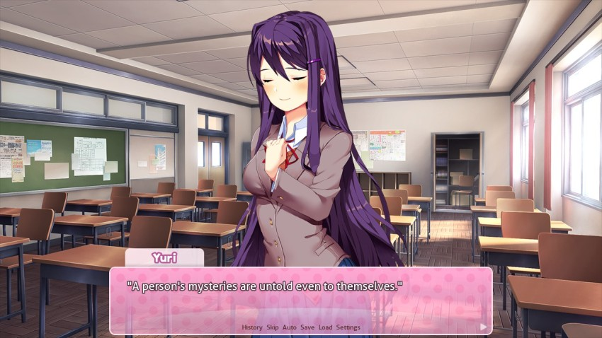
: "And you, as someone honest and caring...may uncover feelings you weren't aware were in you. T-That is...I think that...she would be a very fortunate person to have you feel that way about her."
I just don't like people to be sad, okay?
 : Yuri...you're giving me too much credit. I'm a pretty simple guy. So I think I'm pretty good at understanding my own feelings. I'm not nearly as sophisticated as you."
: Yuri...you're giving me too much credit. I'm a pretty simple guy. So I think I'm pretty good at understanding my own feelings. I'm not nearly as sophisticated as you.": "A-Ah...that's not...a compliment, is it?"
: It is what it is. Anyway, as long as we're here, why don't we do some reading?": "Well...as long as you're okay with it."
: Yeah. I should be taking my mind off this whole thing anyway."If we hadn't already seen the first two scenes with Yuri, one of them would play here. Since we have, it moves right along to poetry. Thanks for making me do less work!
-----
After some time passes, Monika calls out to the clubroom.
: "Why don't we share our poems now?"Before I know it, everything is back to normal. Everyone goes to retrieve their poems, and I do the same. I make eye contact with Monika, and she smiles at me. I wonder what she was talking about with Sayori...
BGM: Okay, Everyone!
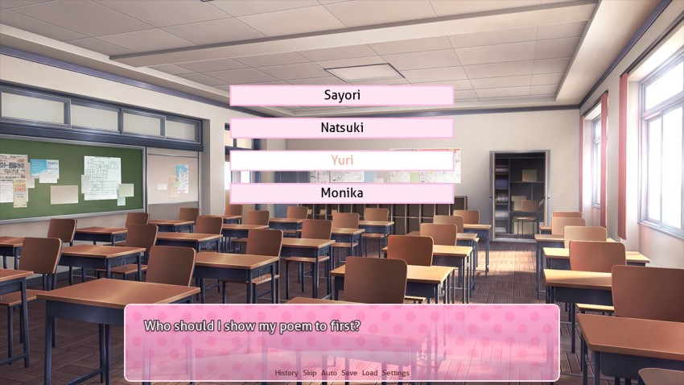
For the sake of pacing, no what-order vote this time.
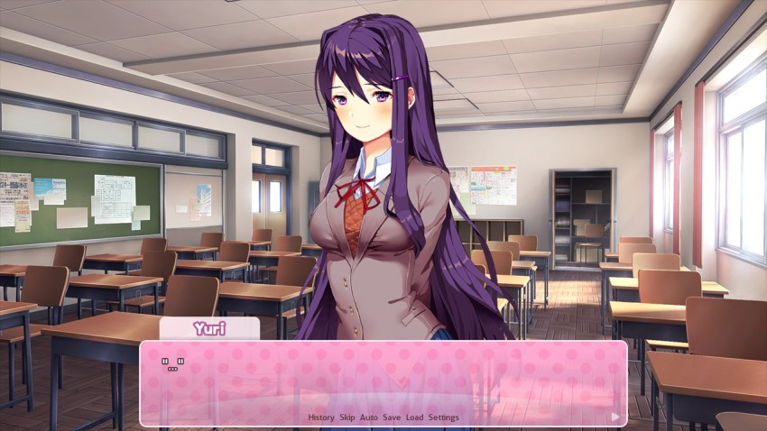
: "Mitayo. Your writing has only improved in these last few days. Every poem you've shown me has been nothing short of spectacular. I can really feel the emotions...I'm a little envious, even...I don't think it ever came to me this naturally."
: Yuri, that's the wrong way to put it. This never did come naturally to me."I asked the internet. They wrote me poems, too!
 : But I've been able to improve so much thanks to you. You're really the example I was chasing after."
: But I've been able to improve so much thanks to you. You're really the example I was chasing after.": "I-Is that so...?"
Yuri gently smiles to herself.
: "This feeling..."
: "I'm so glad...I got the chance to share my writing. I never thought it would feel like this."
: I remember you mentioning that yesterday. I can't believe that you're so good at something and you've never even shared it with anyone. It's kind of a shame.": "Maybe, but...it's not like I really...had a choice."
: What do you mean...?": "Well..."
BGM: My Feelings
Yuri smiles sadly.
: "Mitayo, during lunchtime, I eat by myself. Did you know that? It's a great time to find a quiet spot and do some reading. In fact...I always have some books with me. You could say I really enjoy reading...Well, that's one way to put it, anyway..."
: "But...books are so full of amazing and inspiring people. People you want to fall in love with. Or people you just know would make a really good friend. Cheerful people, who always put a smile on your face...or deep thinkers, and problem solvers, who discover the mysteries of life. So when you look at it that way...I'm surrounded by friends every day...you know?"
: "They don't tease me for spacing out all the time...they don't make fun of my body type...and...And they don't hate me for acting like a know-it-all!"
Wait, whats wrong with your body type now?
: People...say that about you?": "I'm not a know-it-all, Mitayo! It's the opposite. I don't know anything! I don't know how to talk to people. I don't know how to make people see me as normal. I don't even know how to make myself happy! I have all these feelings...and all I can do with them is read, and write..."
: "But it wasn't until now that I started sharing it with you...that I really understood what was missing all this time."
: But I haven't really done anything...": "No..."
: "Just being patient and respectful...that's really...important to me. I know I'm a difficult person, Mitayo...I speak too slowly...I second-guess myself all the time...I read too deeply into things..."
: "But every time...you've always treated me just like anyone else. It's so rare that I feel comfortable with myself when I talk to others...but that's why every time I talk to you...I just feel really happy."
: I see...well, I treat you how you deserve to be treated, Yuri. And if other people don't see it that way, then screw them. I mean, I joined this club hoping I would make friends."We joined for cupcakes.
: And I would say I've had at least one success. Wouldn't you?"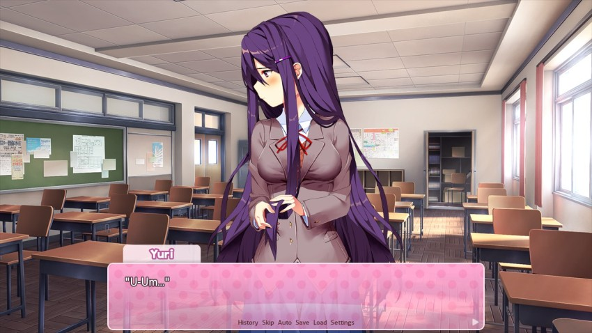
: "If you put it that way yeah...we really are friends now, aren't we?"
YES. JESUS.
Yuri puts her head in her hands. But this time, she's smiling as she does it.
: Do you want to show me your poem?": "Yeah. I do! Let me get it for you..."
BGM: Okay, Everyone! (Yuri)
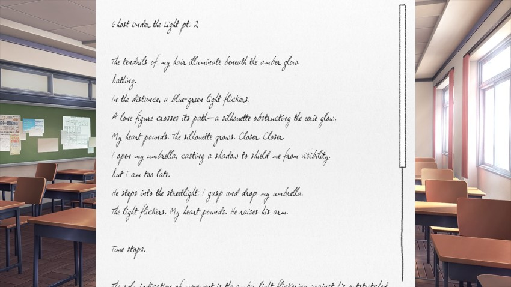
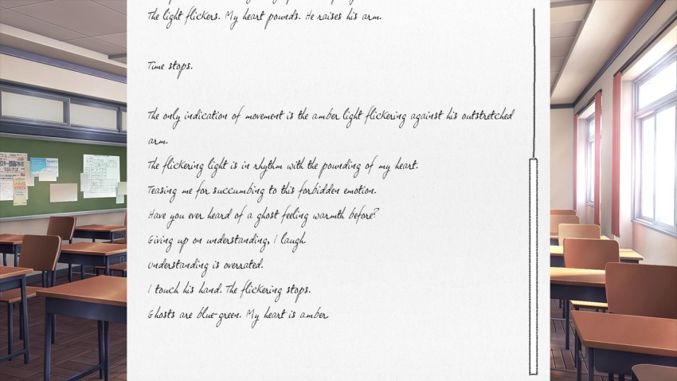
quote:
Ghost Under the Light pt. 2
The tendrils of my hair illuminate beneath the amber glow.
Bathing.
In the distance, a blue-green light flickers.
A lone figure crosses its path - a silhouette obstructing the eerie glow.
My heart pounds. The silhouette grows. Closer. Closer.
I open my umbrella, casting a shadow to shield me from visibility.
But I am too late.
He steps into the streetlight. I gasp and drop my umbrella.
The light flickers. My heart pounds. He raises his arm.
Time stops.
The only indication of movement is the amber light flickering against his outstretched arm.
The flickering light is in rhythm with the pounding of my heart.
Teasing me for succumbing to this forbidden emotion.
Have you ever heard of a ghost feeling warmth before?
Giving up on understanding, I laugh.
Understanding is overrated.
I touch his hand. The flickering stops.
Ghosts are blue-green. My heart is amber.
Poem impressions: I think she likes us, boyos.
BGM: Okay, Everyone!
Finishing the poem, I start to hand it back to Yuri. But instead of taking it from me, she looks away.
: "...do you...dislike it?"
: Ah--no, of course not. I just...don't really know how I should respond."Despite Yuri's poems usually being cryptic, it wasn't hard to figure out what this one was about.
This is about the raccoon again, isnt it?
: "I-I don't know if I'll be able to explain this one..."
: That's fine. I understand this one.": "..."
Yuri is having an even harder time speaking than usual.
: Does this one...mean a lot to you?"Yuri nods.
: I'm not really good with words, but...I'm happy that you shared it with me. So, thank you. And I hope we keep spending time together."Despite my inability to make eye contact, I see a faint smile emerge on Yuri's lips. I once again try to hand the poem back to her. But instead, Yuri gently takes my hands and pushes them back toward me. I hesitate in response to her warm touch.

: "Um...the poem is..."
Once again, Yuri fails to form a complete sentence.
What is it, girl? Is Timmy stuck in the well again?
: You mean I can keep it?"Yuri nods.
: I'd love to."Again, Yuri faintly smiles, as if she doesn't want me to notice.
: "You always....make me feel nice. I know I'm not good with people, but...I hope that...I can return the favor sometimes."
: Yeah. Don't worry. I think you do a good job."Yuri finally turns back toward me.
: "I guess...we should move on before Monika says something. But I'm sure we can talk again later..."
: Yeah. I'm sure we will."With that, Yuri timidly smiles at me, and I return to my seat so I can put her poem away.
Oh thank God, I've been hoping to get a nearly illegible piece of paper to tie my room together. This thing looks like the Declaration of Independence. LEARN PRINT.
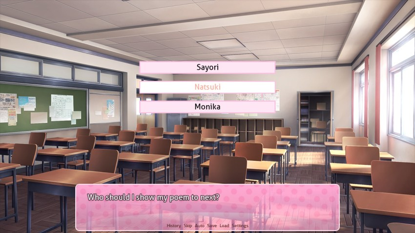
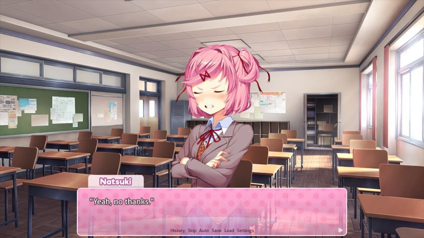
: Eh? You didn't even--": "Next!"Hahaha, she doesn't even try to be nice. What a brat.
I love Natsuki. You gotta admire that level of pettiness.
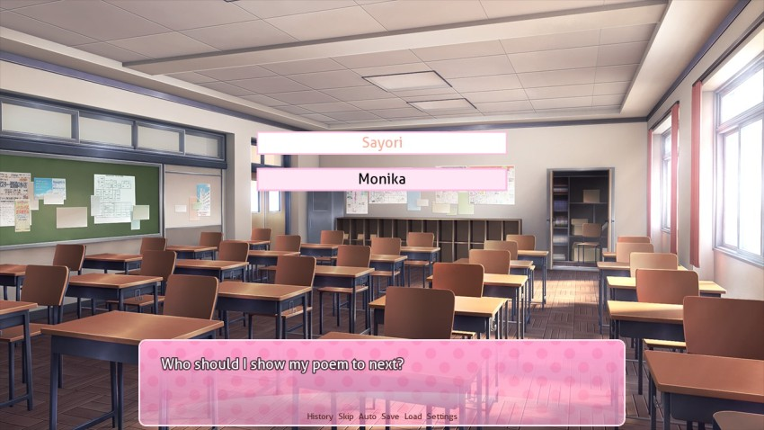
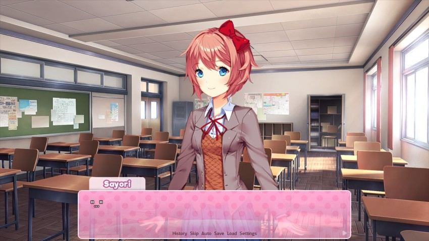
: "...Hm. It's nice, I guess~": Come on, I can already tell you don't like it.": "Well... you don't need to worry about what I think. After all, you wrote this for someone else, didn't you? Probably Yuri...": Eh?? I didn't write this for anyone specifically!": "Maybe...that's not really what I meant, though. But it's okay. 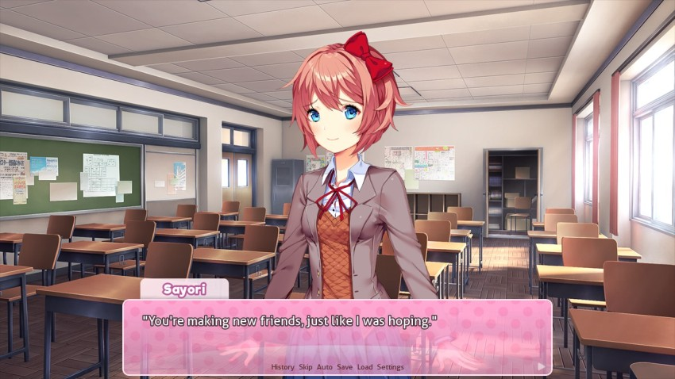
: "That makes me...really happy. And you're happy too, right? In this club?": Well...of course I am.": "Good~ that's all that matters to me. Thank you, Mitayo.": Sayori...is there something wrong?": "Huh? No, nothing. I'm just a little tired today. Ehehe.": Alright...just tell me if you need anything. I will.": "Don't worry about me, okay? You can go play with everyone else now.": If you insist...": "I'm gonna go home a little bit early today.": Sayori...?": "Tell Monika I wasn't feeling well, okay? I'll see you tomorrow~"Before I can say anything else, Sayori cheerfully walks out of the classroom, humming to herself.
Well, uh, that was abrupt.
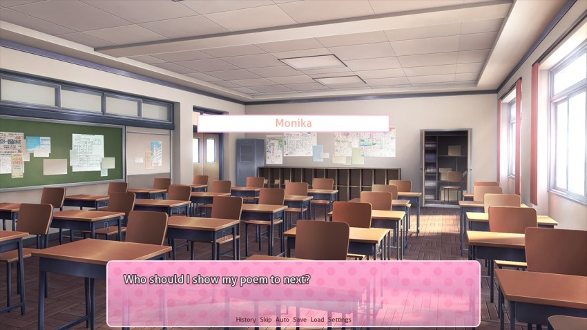
: "Hi Mitayo~ Have you thought about what you want to submit to perform at the festival?": Well..."Being in this club is one thing, but performing in front of a bunch of people...
: ...I'll have to give it some more thought."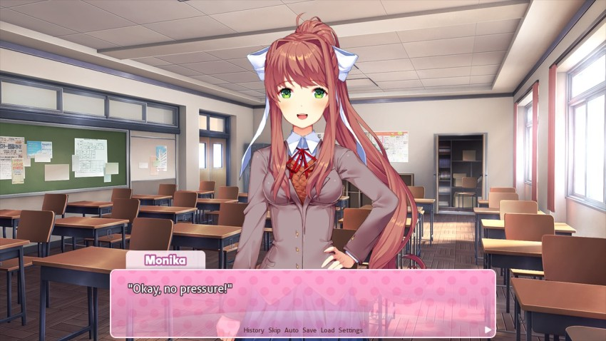
: "But whatever you do, I'm sure it'll turn out great. It would also make me happy to see. Ahaha! Anyway, let's take a look at today's poem!": Sure..."I let Monika take the poem I'm holding in my hands.
: "Your style's gotten so refined, Mitayo.": "Yuri's been teaching you a lot of things, hasn't she?": Well--I guess so.": "Yeah... I've been noticing how much time you spend with her. I think I've heard her say more words these past couple days than she's talked in the whole year. Not sure how you did it, but that's pretty impressive...": Well, she just needs some patience and a way to talk about all the things in her head, I guess...I'm still getting the hang of it, myself.": "Hm...you're certainly putting in a lot of effort. You must really like her.": Eh? That's--": "Ahaha! It's awfully suspicious, you know? Spending time with her in the clubroom every day...reading that edgy novel with her..."Shoving chocolates down her throat while she stares longingly at you...
: Well--! I just...feel bad that she has a hard time socializing."Uh-huh.
: It makes me want to make sure she doesn't spend all her time alone. Besides, the novel isn't too bad either, you know...": "Alright, alright~ I get you.": "I know that Yuri isn't used to opening herself up...so if something bad happens while she's vulnerable...then it could be really hard for her. Her books aren't a total escape from reality. They're just a bandage.": You say that like I'm going to hurt her..."Love can be the greatest pain of all, right?
: "Sorry, I didn't really mean that~ If anything, she might accidentally hurt herself.": "Anyway...!": "I'll share my poem with you now, alright?": Er...alright..."BGM: Okay, Everyone! (Monika)
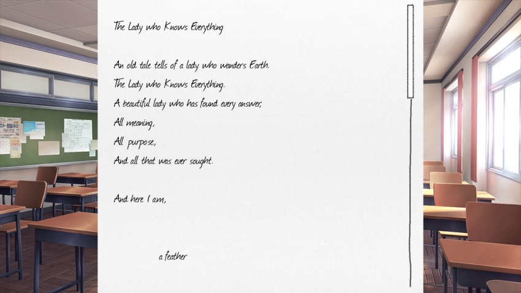
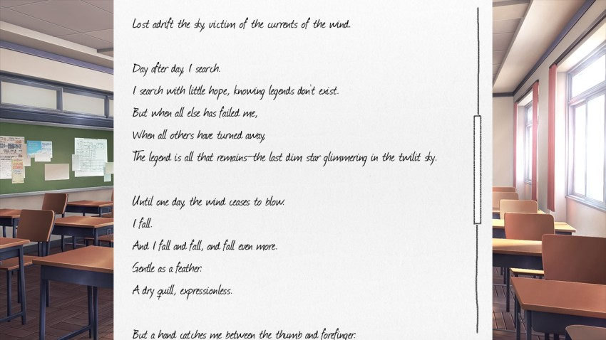
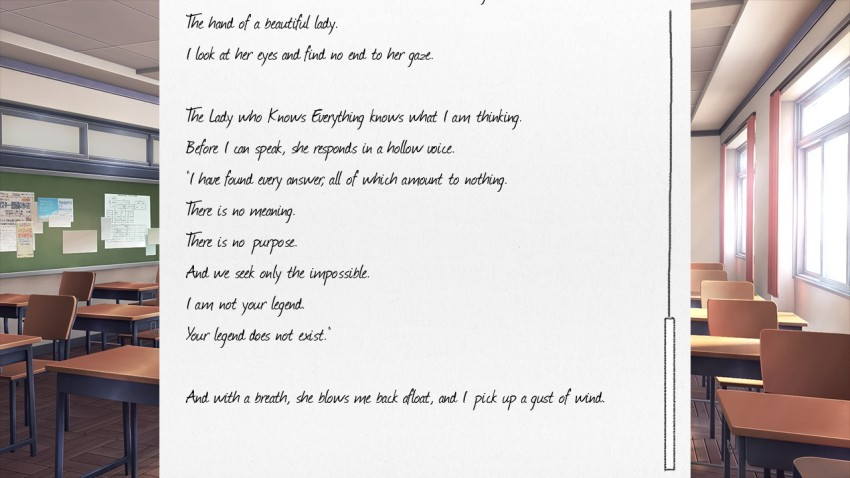
quote:
The Lady who Knows Everything"
An old tale tells of a lady who wanders Earth.
The Lady who Knows Everything.
A beautiful lady who has found every answer,
All meaning,
All purpose,
And all that was ever sought.
And here I am,
a feather
Lost adrift the sky, victim of the currents of the wind.
Day after day, I search.
I search with little hope, knowing legends don't exist.
But when all else has failed me,
When all others have turned away,
The legend is all that remains - the last dim star glimmering in the twilit sky.
Until one day, the wind ceases to blow.
I fall.
And I fall and fall, and fall even more.
Gentle as a feather.
A dry quill, expressionless.
But a hand catches me between the thumb and forefinger.
The hand of a beautiful lady.
I look at her eyes and find no end to her gaze.
The Lady who Knows Everything knows what I am thinking.
Before I can speak, she responds in a hollow voice.
"I have found every answer, all of which amount to nothing.
There is no meaning.
There is no purpose.
And we seek only the impossible.
I am not your legend.
Your legend does not exist."
And with a breath, she blows me back afloat, and I pick up a gust of wind.
Poem impressions: I like the structure of this poem and the way it plays across the page. Monikas right it is visually appealing to play with the empty space.
BGM: Okay, Everyone!
: "You know...I feel like learning and looking for answers are the sorts of things that give life meaning. Not to get too philosophical or anything...but it was kind of on my mind, so that's what I wrote about.": I see...I never really put much thought into it.": "In a way, it's almost paradoxical. Because if we had all the answers, wouldn't the world start to lose its meaning?": You know, there's one thing I noticed...it seems like everyone in the club prefers writing about things that are more sad than happy."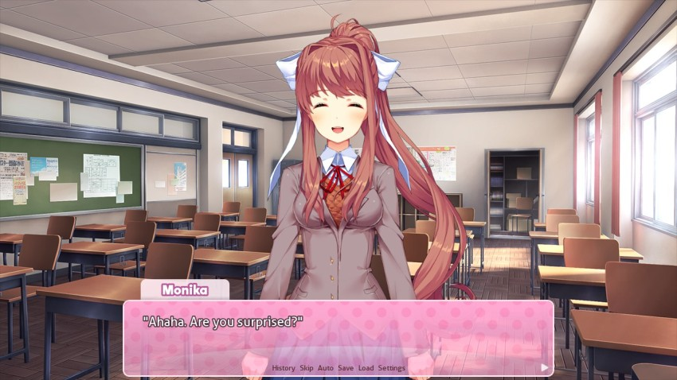
: "I mean, if everything was okay...we wouldn't really have anything to write about, would we? Humans aren't two-dimensional creatures. I think you'd know that better than anyone.": You mean one-dimensional...?": "Ah...yeah, that! Anyway...": "Here's Monika's Writing Tip of the Day! Are you ever too shy to share your writing because you're afraid it's not that good? It can be really disheartening to get a lukewarm response to something you put so much into. But if you find other people who enjoy writing, then sharing becomes a lot easier! Because instead of just telling you that your writing is good, or okay, or bad...they'll want to focus more on everything that went into it, and the things you can work on. It's much more encouraging that way, and it will make you want to continue improving. It's almost like having your own little Literature Club, don't you think?": "...That's my advice for today! 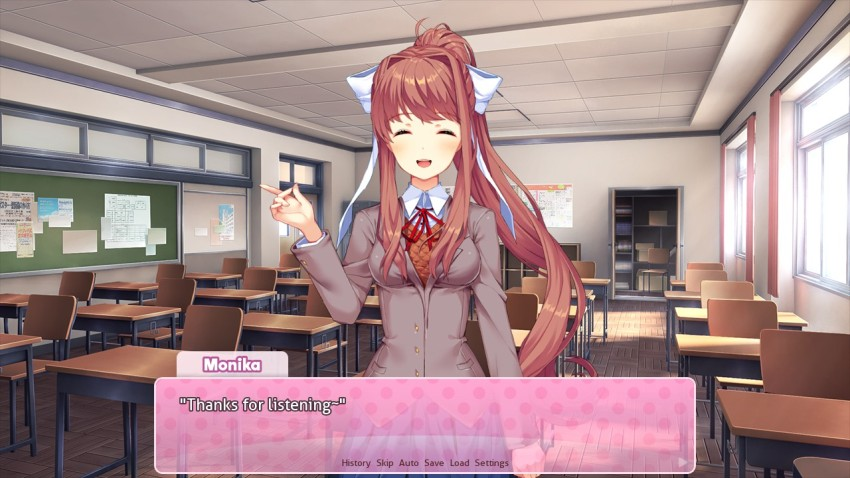
---------
BGM: Doki Doki Literature Club! (modified - no "Doki Doki!" at the beginning)
: "We're all done sharing poems, right? Why don't we start figuring out--": "Hold on a second! Is it just me, or did you say something strange just now?": "Eh...?": "Something did sound a bit unusual...that's right. You deviated from your usual catchphrase when addressing the club."
: "C-Catchphrase? I don't have a catchphrase..."Of course you do. It's an OST title, after all.
: "Jeez...why is the mood so weird today? Look, even Yuri isn't immune to it.": "Uu...stagnating air is common foreshadowing that something terrible is about to happen..."
Calm down, Magus.
: In your books, maybe! Look, the only thing different is that Sayori isn't here.": "Ah...it seems you're right."
: "Sigh...Sayori always helps lighten the mood a little bit, doesn't she? It's almost like everyone's balance is thrown off a little when she's not around...": "Where the heck did she run off to, anyway? I thought she just went to pee." : "Oh, come on.": Ah, she actually wasn't feeling too well and went home early..."
: "Oh, come on.": Ah, she actually wasn't feeling too well and went home early...": "Is that so...? I hope she's alright..."
: "Seriously? Of all the times to not go home with her, you pick the time she's not feeling well? So much for you two being all lovey-dovey.": Ah--no! First of all, stop misunderstanding my friendship with Sayori! And second, she's kind of been avoiding me today, so I didn't want to force it...": "Hooooh?"
That curious expression coming from Yuri, of all people??
Pretty sure Yuri's reaction is stock no matter what route we're on.
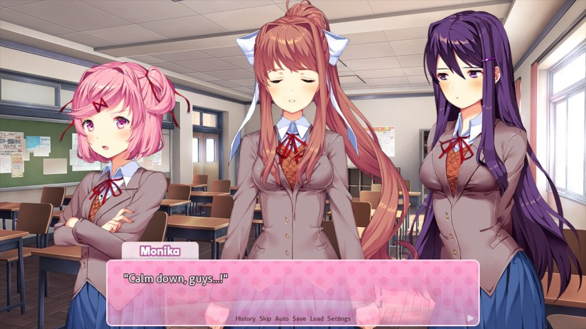
: "I talked to her earlier, and everything is fine.": What did she say...?": "Anyway, we need to figure out the rest of the festival preparations, so...let's decide what everyone will be doing this weekend."So...not gonna answer the question or...?
: "I already know what I'm doing!": "That's right. Natsuki will be making cupcakes. But we might need a lot of them, and different flavors...can you handle that all by yourself, Natsuki?": "Challenge accepted!": "And as for myself...I'm going to be printing and assembling all the poetry pamphlets. Sayori will be helping me design them.": "And as for Yuri...": "...Yuri, you can...ah... Um...": "...?"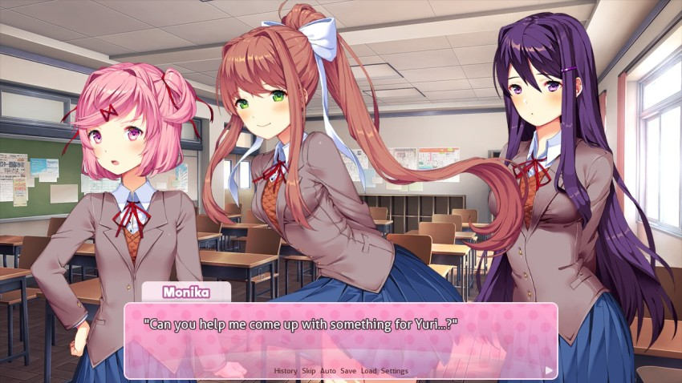
Smooth, Monika.
: "I...I'm useless..."
: "N-No! That's not it at all! You're the most talented person here, you know!": "...": "N-Now Natsuki's pouting, too??": Jeez, even I can tell now...I guess I never gave Sayori enough credit, but I can tell things are even harder on you when she's not around.": "Ah...that may be the case...": "But if I can't also be a leader on my own, then I won't grow as a person. So, Yuri...! You have beautiful handwriting, you know? So you should make some banners and decorations to help set the atmosphere.": "Atmosphere...? Um, about that...I..."
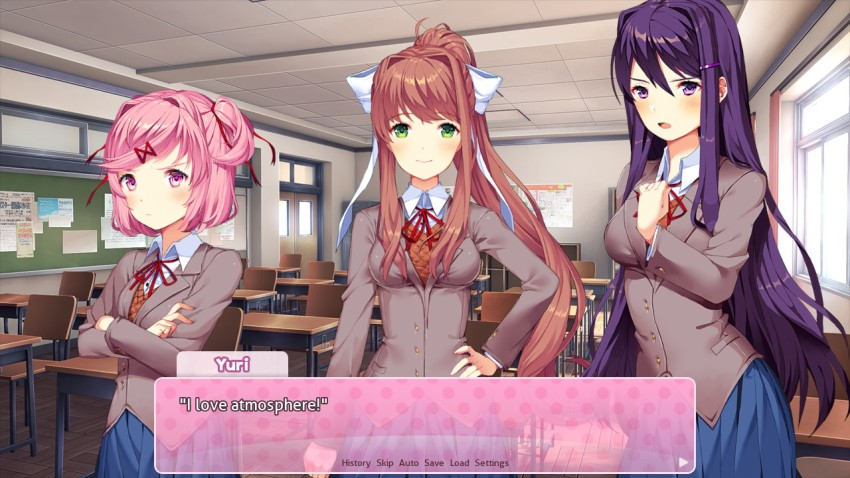
Her little fistpump makes this.
Yuri's expression suddenly changes as she stares at her desk in focus and starts nodding to herself.
: Your mind is already racing, I see...": "That's great! You'll be a wonderful help, Yuri. But anyway...that just leaves you, Mitayo.": The one who is truly useless."I mean, more or less.
: "Ahaha! Don't say that.In fact, both Natsuki and Yuri have some pretty heavy tasks to handle. It would probably go a long way to give one of them a hand. You could always help me out, as well...I would be really appreciative of that.": Ah--that's..."Is Monika suggesting I spend the weekend with one of my club members? How on Earth are they going to respond to a suggestion like that...?
Yuri would probably wet her pants with excitement. Natsuki, though, would probably resent every minute of it.
: "Ah...I...suppose I wouldn't mind a bit of help..."
: "Well, even if you don't know how to bake, there's always some dirty work I could give to you. It's not like Monika's going to give me a choice, and you shouldn't be sitting on your butt anyway..."Oh, apparently Natsuki's all for it. Stock response, again - kind of a missed opportunity there, considering how annoyed she is with us right now.
Natsuki tries to mumble a bunch of excuses like that.
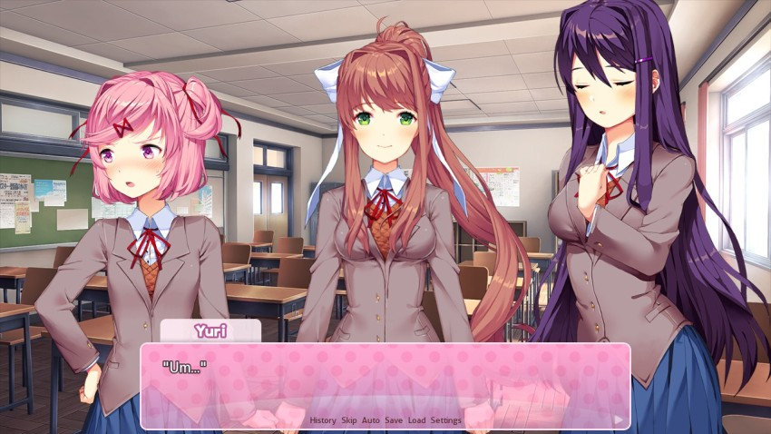
: If I recall, Natsuki, you mentioned that you would like to handle the baking on your own. Mitayo may not like to be around if you only make him out to be a nuisance. So therefore...he may be more suited to assisting with the decorations."
"Like holy hell are you going to hang out with my book-boyfriend."
: "Hold on! I never said that! How hard could it be to make a few decorations, anyway? Sounds more like you're just making excuses for Mitayo to--": "W-What are you saying?! It will be extremely meticulous work..."
: "And baking isn't? Just what do you think--"Good Lord, are we doing this again? These two bicker like an old married couple. Fortunately, Monica's a bit quicker on the draw this time.
: "Guys, guys! Let's settle down for a moment...in the end, I think it's up to Mitayo to decide how he'd like to contribute.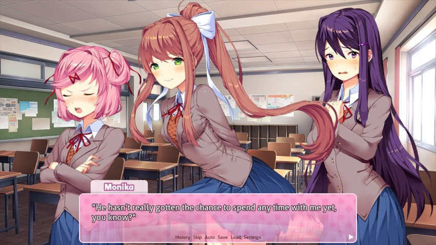
: "So I'm sure he's interested in--": "You literally just said--": "I-I'm surprised as well!"
: "Sorry, sorry! I was just saying, though...": "Jeez...can we just settle this already?": "Yeah...Mitayo, you're okay with this, right? In the end, it's up to you.": Ah...of course."I choose none of you. I'm going to play Rocket League all weekend. That's what you get for being catty.
: "Hmph.": "Very well..."
: "In that case..."Everyone looks straight at me.
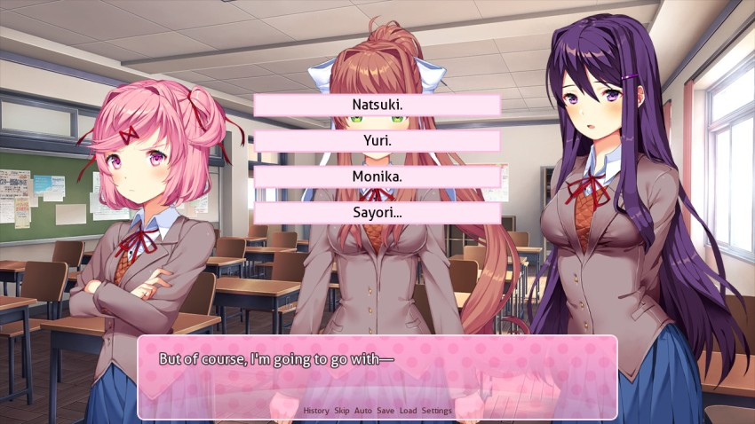
Okay, guys, I'm going to have to ruin the magic a little bit for this one - we can't actually choose Sayori or Monika for this choice. It's a but-thou-must.
For today's VOTE TIME, who do you want to spend time with: Yuri or Natsuki?